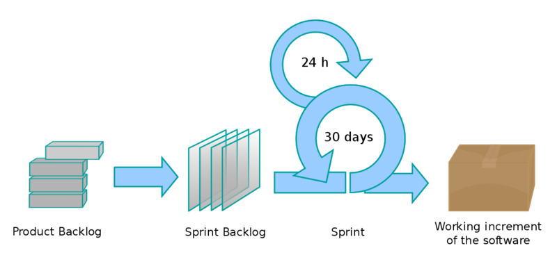

Chapter 1: General Context
Problem Statement:
1. Description of the Problem:
In the realm of web applications, ensuring a holistic and positive user experience is paramount. While the visual aesthetics of an application play a significant role, the true essence of user experience delves deeper. Users expect a seamless interaction with applications, characterized by:
- Swift Response Times: The application should be agile, minimizing wait times and ensuring users can navigate and interact without delays.
- Real-time Notifications & Feedback: Users should be promptly informed about any updates, changes, or actions within the application, fostering a sense of engagement and clarity.
- Efficient Background Processing: When users initiate tasks that demand substantial computational resources, these processes should run in the background, ensuring the user interface remains responsive and unblocked.
- Optimized Database Interactions: The underlying database queries should be efficient, ensuring data retrieval and storage are swift and do not become bottlenecks.
The challenge lies in integrating all these facets into a cohesive user experience, where each element complements the other.
2. Impact of the Problem:
Failure to address these expectations can lead to user frustration, decreased engagement, and potential abandonment of the application. An unresponsive interface, delays in feedback, or a lagging application can erode trust and satisfaction among users.
3. Benefits of Solving the Problem:
By ensuring a cohesive user experience where each element complements the other, applications can retain and grow their user base, increase user satisfaction, and potentially see a rise in positive word-of-mouth referrals. Furthermore, an optimized application can lead to reduced server costs and increased scalability.
Main Requirements:
Main Requirements for the Invoicing App:
User Management:
- Allow users to create a profile with essential details.
- Implement login/logout functionality.
- Provide an option for users to login using Google Authentication.
- Ensure no obligatory registration is required for basic features.
- Implement an admin login with enhanced features and controls.
Business Profile:
- Allow users to enter their business information, including name and address.
- Provide an option to upload a business logo that can be displayed on invoices.
Invoicing:
- Implement a user-friendly interface for creating invoices.
- Automatically calculate VAT based on the entered details.
- Generate a PDF version of the invoice for easy sharing and printing.
- Ensure the generated invoice adheres to legal standards.
Admin Features:
- Monitor user activity and manage user accounts.
Security & Privacy:
- Implement role-based access controls to ensure users can only access their data.
- Regularly back up user data and provide recovery options.
- Ensure compliance with relevant data protection regulations.
- Implement measures to prevent unauthorized access, especially for admin features.
User Experience & Interface:
- Design a responsive web interface that's accessible on various devices and screen sizes.
- Ensure intuitive navigation and clear call-to-action buttons.
Integration:
- Seamlessly integrate with Google Authentication for secure and quick logins.
- Ensure compatibility with popular web browsers.
Support & Help:
- Provide a help section or FAQ to assist users with common queries.
- Implement a feedback mechanism for users to report issues or suggest improvements.
Main Requirements for the Messaging App:
User Management:
- Allow users to create a profile with essential details such as name, email, and profile picture.
- Implement login/logout functionality.
- Provide a feature to find and start a conversation with other users.
Messaging:
- Implement a user-friendly interface for sending and receiving messages in real-time.
- Ensure messages are persisted in each conversation, allowing users to view chat history.
- Provide real-time user status to indicate if the other user is online or offline.
User Experience & Interface:
- Design a responsive web interface that's accessible on various devices and screen sizes.
- Ensure intuitive navigation with clear indicators for unread messages.
- Implement a notification system for new messages.
Security & Privacy:
- Implement role-based access controls to ensure users can only access their conversations.
- Implement measures to prevent unauthorized access.
Analysing The Problem:
Problem Analysis for the Invoicing App:
Problem Definition:
Small businesses and individuals require a simple, quick, and legally compliant invoicing tool that offers both free and premium features.Challenges & Constraints:
- Ensuring legal compliance in generated invoices.
- Handling varying VAT calculations.
- Ensuring data security, especially when handling business-sensitive information.
Stakeholders:
- Small business owners
- Freelancers or individual professionals
- Admin or platform managers
Desired Outcomes:
- A user-friendly platform that simplifies the invoicing process.
- Increased user trust due to legal compliance and data security.
- A scalable model.
Problem Analysis for the Messaging App:
Problem Definition:
Users need a straightforward and secure platform to communicate in real-time, similar to popular messaging apps but with a focus on simplicity and privacy.Challenges & Constraints:
- Ensuring real-time communication with minimal latency.
- Maintaining user privacy and ensuring end-to-end encryption.
- Handling large volumes of concurrent users without performance degradation.
- Managing message persistence and storage efficiently.
Stakeholders:
- Regular users looking for simple communication tools.
Desired Outcomes:
- A responsive web-based messaging platform that ensures real-time communication.
- High user trust due to robust security and privacy measures.
- A scalable infrastructure that can handle growth in user numbers.
Proposed Solutions:
Proposed Solutions for the Freemium Invoicing App:
Background Jobs for Invoice Generation:
- Description: Implement background processing to handle the generation of invoice PDFs. This ensures that the user's UI remains responsive and unblocked, even when generating complex invoices.
- Benefits:
- Improved user experience due to non-blocking UI.
- Scalability, as multiple invoices can be processed simultaneously in the background.
- Reduced chances of timeouts or server overloads during peak usage times.
Web Servers & Database Storage:
- Description: Utilize robust web servers to deliver the app to users efficiently. Implement a relational or NoSQL database system to ensure user data persistence, including their profiles, business details, and generated invoices.
- Benefits:
- Reliable and fast access to the app.
- Secure and structured storage of user data.
- Easy retrieval and backup of user information and invoices.
Proposed Solutions for the Simple Messaging App:
WebSockets for Real-time Communication:
- Description: Implement WebSockets to provide a real-time data feed to users. This allows for instantaneous message delivery and real-time status updates (e.g., online/offline status).
- Benefits:
- Seamless and instant communication between users.
- Reduced latency compared to traditional polling methods.
- Enhanced user experience due to real-time feedback and notifications.
Web Servers & Database Storage:
- Description: Deploy the app using high-performance web servers to ensure smooth user access. Use a database system, preferably one optimized for real-time applications, to implement message and user data persistence.
- Benefits:
- Consistent and fast access to the messaging platform.
- Secure storage of messages and user profiles.
- Efficient retrieval of chat histories and user data.
Development Methodology: Agile Scrum
Introduction:
The Agile Scrum methodology was chosen as the primary development approach for both the invoicing app and the messaging app. Scrum, a subset of Agile, emphasizes collaboration, adaptability, and short, focused bursts of work known as sprints.

Product Backlog for the Invoicing App:
| Priority | User Story | Acceptance Criteria |
|---|---|---|
| 1 | As a user, I want to create a profile so that I can personalize my invoicing experience. | User can sign up, add essential details, and upload a business logo. |
| 2 | As a user, I want to generate an invoice without any delays. | Invoices are generated in the background, ensuring the UI remains responsive. |
| 3 | As a user, I want to see the calculated VAT automatically. | VAT is automatically calculated based on entered details. |
| 4 | As an admin, I want to monitor user activity. | Admin can log in and view users. |
| 5 | As a user, I want to access the app without mandatory registration. | Users can access basic features without obligatory registration. |
Product Backlog for the Messaging App:
| Priority | User Story | Acceptance Criteria |
|---|---|---|
| 1 | As a user, I want to create a profile to start messaging. | User can sign up and add essential details like name and profile picture. |
| 2 | As a user, I want to send and receive messages in real-time. | Messages are sent and received instantly using WebSockets. |
| 3 | As a user, I want to know the online status of my contacts. | Users can see real-time status (online/offline) of their contacts. |
| 4 | As a user, I want my messages to be private and secure. | Messages are end-to-end encrypted, ensuring privacy. |
| 5 | As a user, I want to find and start conversations other users. | Users can find other users and initiate conversations. |
Roles:
- Product Owner: Dhia Nabli
- Scrum Master: Mr. Slah Bouhari
- Development Team: Dhia Nabli